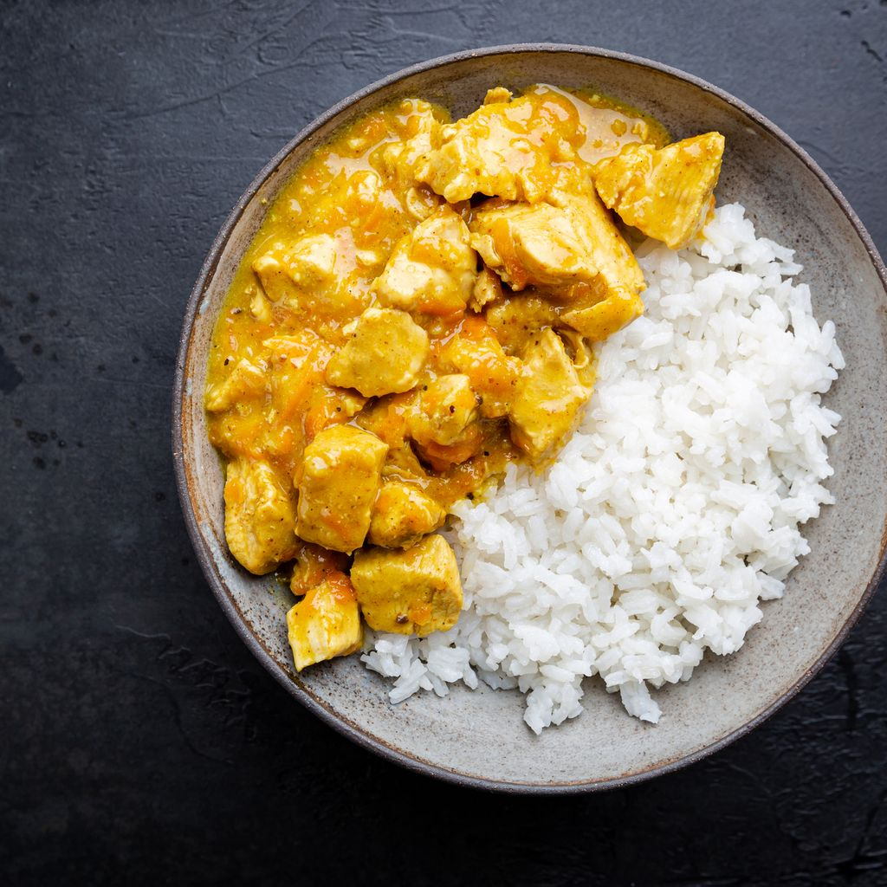

COLOMBO

Description
Le colombo est d'une part un mélange d'épices (variante du curry) et d'autre part une recette de la cuisine indienne.
Ingredients
- Poulet
- Poudre de Colombo
- 1 Citron
Steps
- Dans un mortier, concasser grossièrement les épices. Réserver.
- Dans une grande cocotte ou une grande casserole, dorer le poulet dans l’huile de chaque côté avec le mélange d’épices. Saler et poivrer. Réserver sur une assiette.
- Dans la même casserole, dorer l’oignon et l’ail avec le piment et le colombo. Ajouter de l’huile au besoin. Remettre le poulet dans la casserole. Ajouter les légumes, le lait de coco et le jus de lime. Saler et poivrer.
page principal